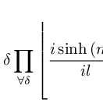
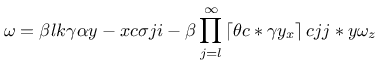
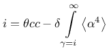
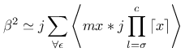
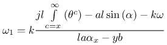
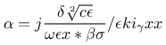

Generator für beliebige TeX-Formeln

Meine Funde neulich auf dem Arxiv-Preprint-Server haben mich auf folgende Idee gebracht: Es gab in der Vergangenheit diverse Papers, die komplett durch eine sogenannte "AI" erstellt wurden und es trotz der Tatsache, dass sie keinen einzigen sinnvolen Gedanken enthielten durch den Peer-review-Prozess geschafft haben und veröffentlich wurden. Das betrifft aber nur Text - was, wenn man in einem solchen generierten Produkt auch einige kompliziert aussehenden Formeln benötigt?
Nun - der Ausgangspunkt war natürlich eine gründliche Internet-Recherche: So etwas schien es wirklich noch nicht zu geben. Also setzte ich mich hin und erstellte - die Arbeit ging wirklich gut von der Hand - in unter zwei Stunden die Version 1.0 dieser Lösung.
Momentan erstellt sie lediglich den TeX-Quelltext für die Gleichung und aktuell auch nur eine isolierte Gleichung. Aber dafür kommen beinahe beliebig komplex wirkende Konstrukte heraus, die bei flüchtigem Hinsehen tatsächlich als mathematische Gleichungen durchgehen können.
Der Quelltext kann für eigene Experimenmte in einen der zahlreichen Online-TeX-Compiler eingegeben werden...
Hier einige Beispiele:
i=\delta \prod\limits_{\forall \delta }\left\lfloor \frac{i\sinh \left(m_{l}\right)}{il}+am\cos \left(x\right)-m\gamma -y\omega \sum\limits_{m=\epsilon }^{k}\left\lceil \sigma \right\rceil \alpha \sin \left(z\lg \left(x_{\delta }\right)\alpha x\right)\beta \ln \left(\sqrt{\omega \sinh \left(x^{l}\right)}\right)-x\tan \left(y\delta _{\sigma }*\epsilon \sigma ^{j}-\epsilon \alpha \delta +\theta \beta \right)*a\frac{y\prod\limits_{z=m}^{\infty }\left\| ya_{i}\omega j^{\alpha }\right\| }{j\sigma }\right\rfloor
![i=\delta \prod\limits_{\forall \delta }\left\lfloor \frac{i\sinh \left(m_{l}\right)}{il}+am\cos \left(x\right)-m\gamma -y\omega \sum\limits_{m=\epsilon }^{k}\left\lceil \sigma \right\rceil \alpha \sin \left(z\lg \left(x_{\delta }\right)\alpha x\right)\beta \ln \left(\sqrt{\omega \sinh \left(x^{l}\right)}\right)-x\tan \left(y\delta _{\sigma }*\epsilon \sigma ^{j}-\epsilon \alpha \delta +\theta \beta \right)*a\frac{y\prod\limits_{z=m}^{\infty }\left\| ya_{i}\omega j^{\alpha }\right\| }{j\sigma }\right\rfloor](images/tex/-10700564261.png "i=\delta \prod\limits_{\forall \delta }\left\lfloor \frac{i\sinh \left(m_{l}\right)}{il}+am\cos \left(x\right)-m\gamma -y\omega \sum\limits_{m=\epsilon }^{k}\left\lceil \sigma \right\rceil \alpha \sin \left(z\lg \left(x_{\delta }\right)\alpha x\right)\beta \ln \left(\sqrt{\omega \sinh \left(x^{l}\right)}\right)-x\tan \left(y\delta _{\sigma }*\epsilon \sigma ^{j}-\epsilon \alpha \delta +\theta \beta \right)*a\frac{y\prod\limits_{z=m}^{\infty }\left\| ya_{i}\omega j^{\alpha }\right\| }{j\sigma }\right\rfloor")
\omega =\beta lk\gamma \alpha y-xc\sigma ji-\beta \prod\limits_{j=l}^{\infty }\left\lceil \theta c*\gamma y_{x}\right\rceil cjj*y\omega _{z}

i=\theta cc-\delta \int\limits_{\gamma =i}^{\infty}\left\langle \alpha ^{4}\right\rangle

\beta ^{2}\simeq j\sum\limits_{\forall \epsilon }\left\langle mx*j\prod\limits_{l=\sigma }^{c}\left\lceil x\right\rceil \right\rangle

\omega _{1}=k\frac{jl\int\limits_{c=x}^{\infty}\left(\theta ^{c}\right)-al\sin \left(\alpha \right)-k\omega }{la\alpha _{x}-yb}

\alpha =j\frac{\delta \sqrt[2]{c\epsilon }}{\omega \epsilon x*\beta \sigma }/\epsilon ki_{\gamma }xx

Artikel, die hierher verlinken
Keycloak Docker und Javalin
29.05.2021
Ich wollte mich endlich mit einem der Themen beschäftigen, die bereits seit langem auf meiner Weiterbildungsliste stehen: Single Sign On und OAuth
GeoJson Stadtplan-Generator
10.04.2021
Ich habe mich wieder einmal mit dem Generieren von Testdaten beschäfigt - dieses Mal sollte es eine Karte eines urbanen Gebietes, sozusagen ein Stadtplan sein.


Vor 5 Jahren hier im Blog
-
Shania Twain - Ain't no Particular Way
29.05.2016
Ein überschaubares Publikum, Union Station als Band im Rücken - musste ja gut werden...
Weiterlesen...
Tags
Android Basteln C und C++ Chaos Datenbanken Docker dWb+ ESP Wifi Garten Geo Git(lab|hub) Go GUI Hardware Java Jupyter Komponenten Links Linux Markup Music Numerik PKI-X.509-CA Python QBrowser Rants Raspi Revisited Security Software-Test sQLshell TeleGrafana Verschiedenes Video Videos Virtualisierung Windows Upcoming...
Neueste Artikel
-
 Keycloak Docker und Javalin
Keycloak Docker und Javalin
Ich wollte mich endlich mit einem der Themen beschäftigen, die bereits seit langem auf meiner Weiterbildungsliste stehen: Single Sign On und OAuth
Weiterlesen... -
sQLshell Support für LDAP
Die sQLshell hat seit einigen Jahren Unterstützung zur Arbeit mit Verzeichnisdiensten (LDAP) eingebaut, der bisher aber eher stiefmütterlich behandelt wurde, was Werbung dafür angeht. Aus aktuellem Anlass habe ich diese Funktionalität einigen Tests unterzogen und kleinere Verbesserungen daran durchgeführt.
Weiterlesen... -
Gnuplot und Statistik
Ich bin neulich bei Mastodon über eine Anfrage gestolpert, wie man online schnell eine graphische Darstellung statistischer Daten mit Mittelwert usw. anfertigen könnte. Ich gab dazu einige Suchparameter ergänzt um den Schlüsselbegriff "Gnuplot" ein und fand sofort einen Artikel, der erklärte, wie man das angefragte Szenario mittels Gnuplot umsetzen könnte.
Weiterlesen...
Manche nennen es Blog, manche Web-Seite - ich schreibe hier hin und wieder über meine Erlebnisse, Rückschläge und Erleuchtungen bei meinen Hobbies.
Wer daran teilhaben und eventuell sogar davon profitieren möchte, muß damit leben, daß ich hin und wieder kleine Ausflüge in Bereiche mache, die nichts mit IT, Administration oder Softwareentwicklung zu tun haben.
Ich wünsche allen Lesern viel Spaß und hin und wieder einen kleinen AHA!-Effekt...
PS: Meine öffentlichen GitHub-Repositories findet man hier.